Bonjour, Je m'appelle Moncef Karim AIT BELKACEM. Je suis lycéen, guitariste et programmeur. Je souhaite poursuivre des études en science de l'ordinateur.
Compétences:
Communication/travail de groupe 100%
Français 100%
Anglais 100%
Arabe 95%
Guitare 90%
Python 90%
HTML5 90%
CSS3 70%
Javascript 50%
Java 20%
Éducation:
Terminale:
En Terminale, je suis lycéen au CNED reglementé. J'ai fait partie d'une expérience d'enseignement des mathématiques menée par le laboratoire Maurice-AUDIN.
J'ai aussi passé le test IELTS en anglais (7.5/9):
Je continue à m'instruire en mathématiques sur Coursera .
Mon projet du grand oral de mathématiques: Comment évaluer la complexité d'un algorithme ?
Première:
En Première, j'étais inscrit au lycée privé "El Malak" situé à Dely Brahim, Alger. Pendant cette année de première, j'ai pu bénéficier d'un enseignement de qualité qui m'a permis de bien me préparer
aux epreuves anticipées de Français. Le cadre scolaire a fortement favorisé les activités artistiques: Journées à thème, Nuit des idées,
groupes de musique et pièces de théâtre.
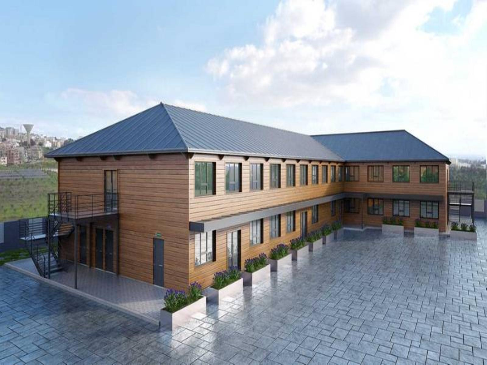
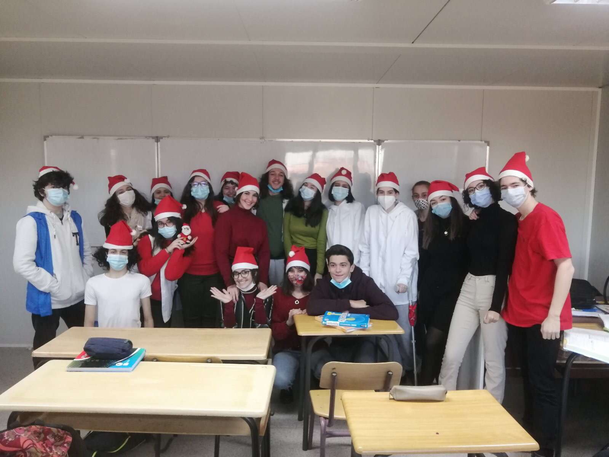
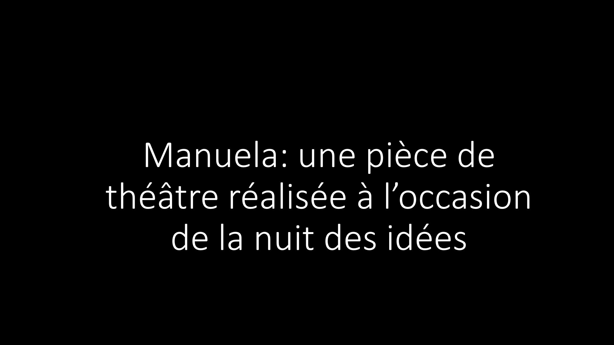
Seconde:
En seconde, j'étais aussi à El Malak. Cette année fut très enrichissante, avec beaucoup de découvertes.
La compétition mathématique "mathenjelaba" organisée par la SMA (Société des Mathématiques d'Algérie) en partenariat avec l'IREM, est un projet de recherche s'étalant sur toute
une année. Pendant cette année 2018/2019, j'ai eu l'opportunité de rencontrer de nombreux éleves, professeurs, chercheurs et ainsi de collaborer avec eux. J'y ai développé mes capacités de communication et de résolution de problèmes,
tout en ayant un aperçu fort positif du monde de la recherche. La diversité des outils à ma disposition et l'aspect pratique du projet m'ont fait comprendre l'importance des mathématiques dans le monde d'aujourd'hui.
A l'issue de ce projet, un document et une présentation devaient être rendus:
Le rapport de cette compétition mathématique s'est fait dans un séminaire international de l'IREM.
23:11 "...Le groupe gagnant, c’est celui qui a choisi la chasse à l’ours.
Alors là c'était extraordinaire. Nous, en tant que chercheurs mathématiciens, on était séduits.
C'était une recherche; on pouvait même éventuellement faire passer ça comme étant une thèse de master,
tellement c’était bienfait et bien argumenté.
Les élèves étaient à l’aise, ils parlaient chacun son tour.
Ils ont utilisé des techniques informatiques performantes..."- Mr Rachid Bebbouchi - président de la SMA.
40:45 "Ils nous ont vraiment épaté, notamment l'expérience de l'ours...Ce Moncef qui était le chef de groupe ... a appris très vite et nous a vraiment ébahi" - Mme Nacima Zedek - enseignante de mathématiques et membre du laboratoire
Maurice-AUDIN.
Cette compétition m'a ouvert les yeux sur le potentiel de l'apprentissage motivé et autonome. Je tiens sincèrement à remercier les chercheurs à l'origine de cette merveilleuse initiative, notamment Mme Nacima Zedek, Mme Kasdali Sihem,
Mr Rachid Bebbouchi et Mr Jannik Trunkenwald.
Programmation
Seconde: mes débuts en programmation
J'ai découvert la programmation en seconde, à l'aide du langage TI-Basic utilisé dans les calculatrices graphiques TI-83 premium ce.
Pendant cette première année, j'ai acquis les bases de l'algorithmique (conditions, boucles et logique).
Ces bases seront mises en pratique lors de la compétition mathématique "mathenjelaba" (voir l'onglet Education section seconde).
Première: la découverte
En Première, j'ai eu l'opportunité d'être financé par le programme de bourse de "Algerian Learners".
Cet organisme basé à l'université de Constantine m'a permis de m'inscrire sur
Coursera , et ainsi de poursuivre des enseignements de qualité internationale dans les mathématiques, le développement web et les sciences de l'informatique.
De Mai 2020 à Juillet 2020, je suivais un rythme draconien. Le réveil à 8h, le sommeil à 22h et 14h de travail assidu.
Les fruits de cette rigueur sont de nombreux certificats d'excellence (36 disponibles sur mon profil Linkedin), mais surtout des bases solides
en programmation.
Je suis actuellement au stade intermédiaire du langage Python
. Je me suis aussi initié en programmation orienté objet avec Java
. 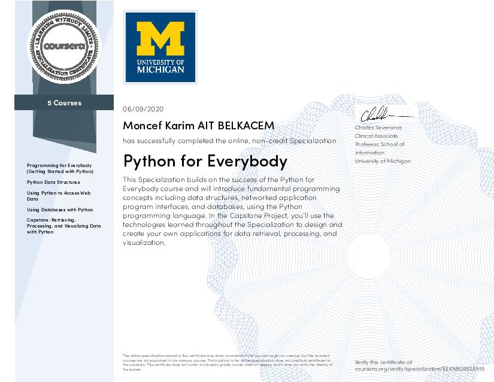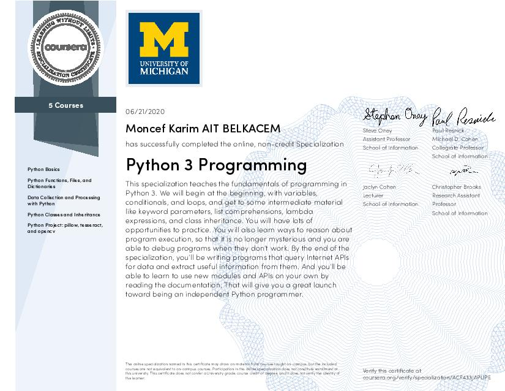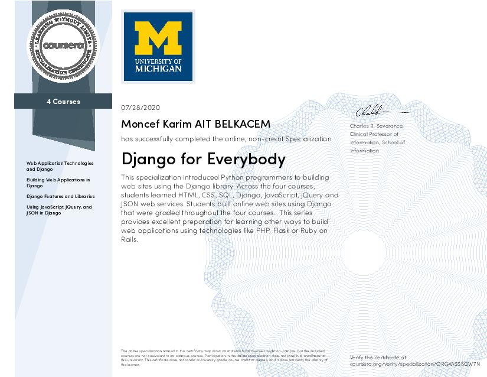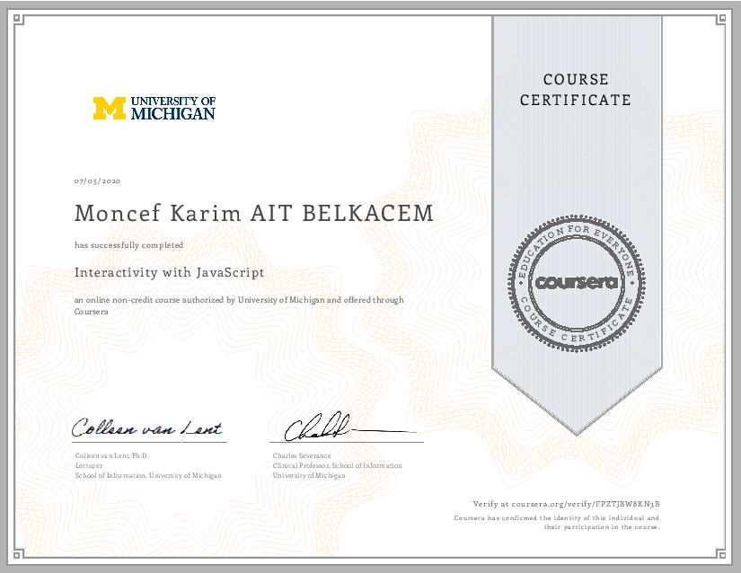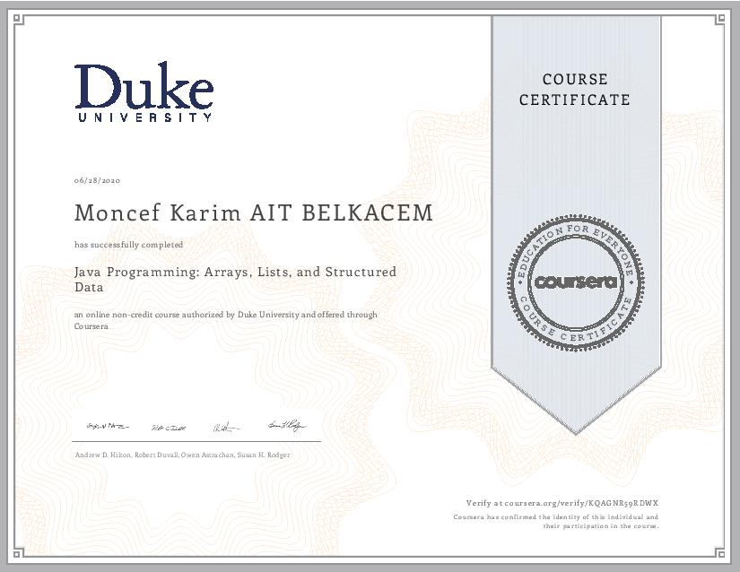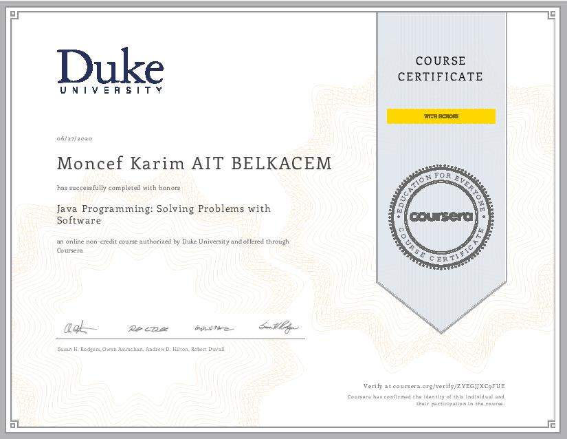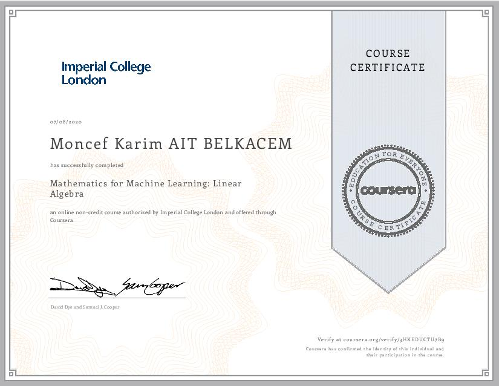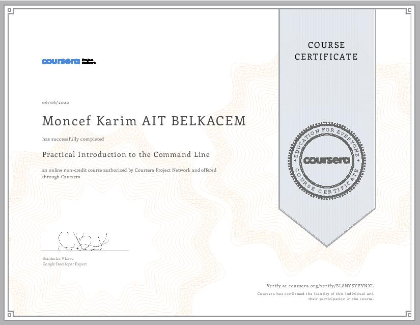
Terminale: je m'améliore
En prévision de la dure année de Terminale, je me suis efforcé de mettre à bon usage mon temps et mes nouvelles capacités de programmation.
C'est pour cela que le 10 août 2020, j'ai entrepris un projet en langage Python qui joint musique
et fonctions mathématiques. Dans ce projet, j'utilise des fonctions mathématiques diverses afin de générer des séries de valeurs (y), que je convertis en mélodies (à l'aide de gammes musicales).
En Terminale, je m'intéresse aux systèmes d'exploitation Linux. J'utilise actuellement Fedora 32
. J'ai acquis ainsi un certain confort avec le terminal (Commandes Bash), mais aussi avec de nombreux outils de développement (Git, Vim). J’ai aussi réalisé mon CV
site en ligne, aucune librairie n’a été utilisée (pas de Bootstrap !!!). Pendant ces vacances d'été, je m'attellerais au langage de programmation C .
Musique
Mon education musicale:
J'ai commencé à faire de la guitare en classe de seconde (2018/2019) à l'école d'Harmonisation des Arts de Dely Brahim (Alger)
.
Grâce aux enseignements et conseils de mon professeur Mr Khazem Mustafa, j'ai pu rapidement progresser.(niveau 3). J'ai été musicalement influencé par le compositeur paraguayen Agustin Barrios Mangoré.
Mes interprétations:
La Catedral - Allegro Solemne - Agustin Barrios Mangoré
Recuerdos de la Alhambra - Francisco Tárrega
Las abejas (extrait) - Agustin Barrios Mangoré
Asturias (extrait) - Isaac Albéniz
Mariage d'Amour - Richard Clayderman
Canarios (extrait) - Gaspar Sanz
Jésus, joie du desir de l'homme - Johann Sébastien Bach
Lagrima - Francisco Tárrega
Tango Populaire
la boda de luis alonso (extrait) - Geronimo Jimenez
 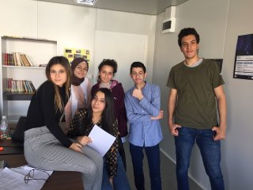
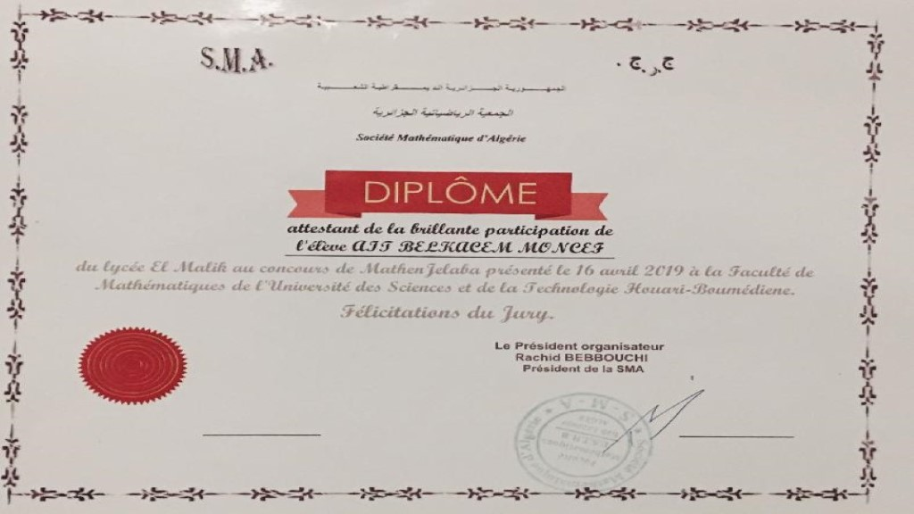
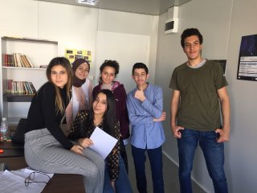
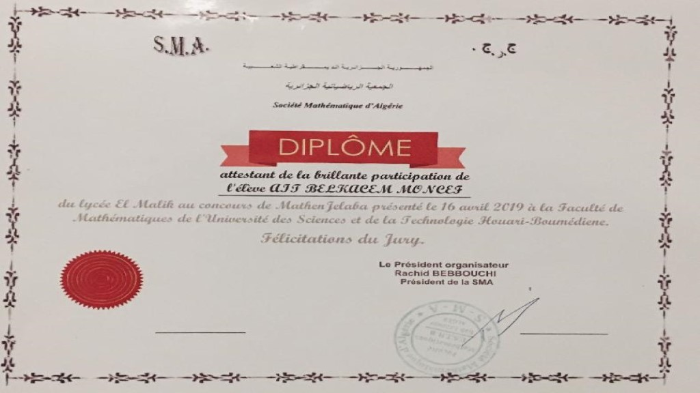